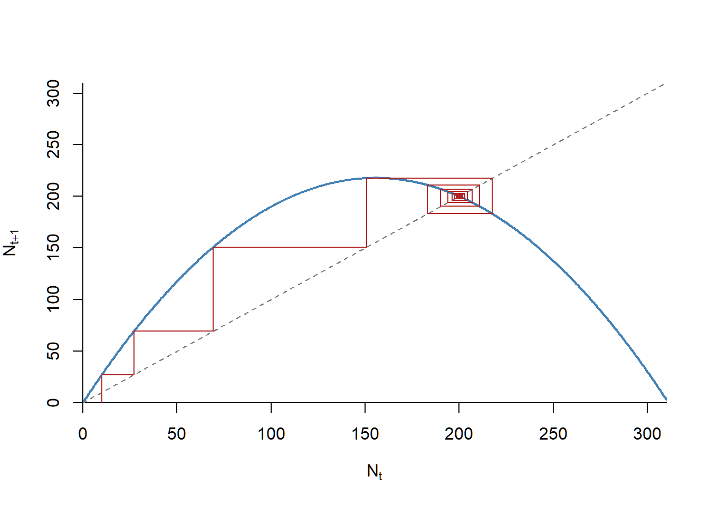
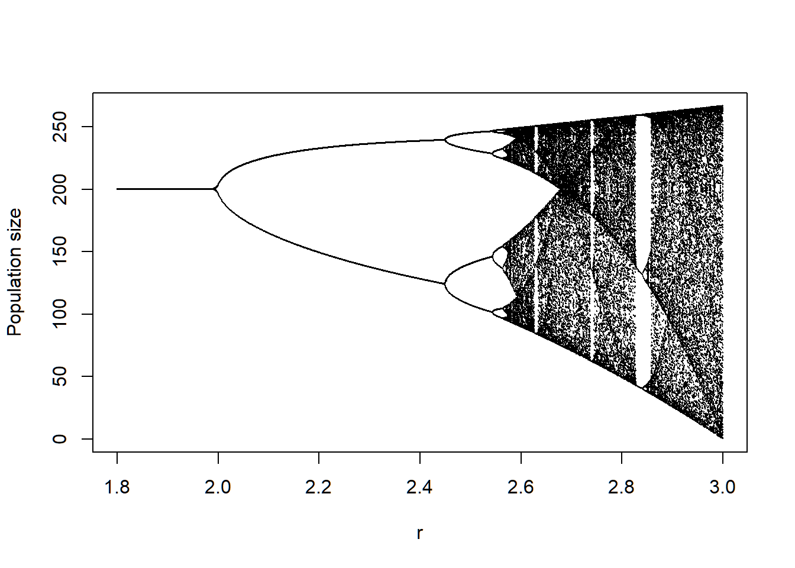
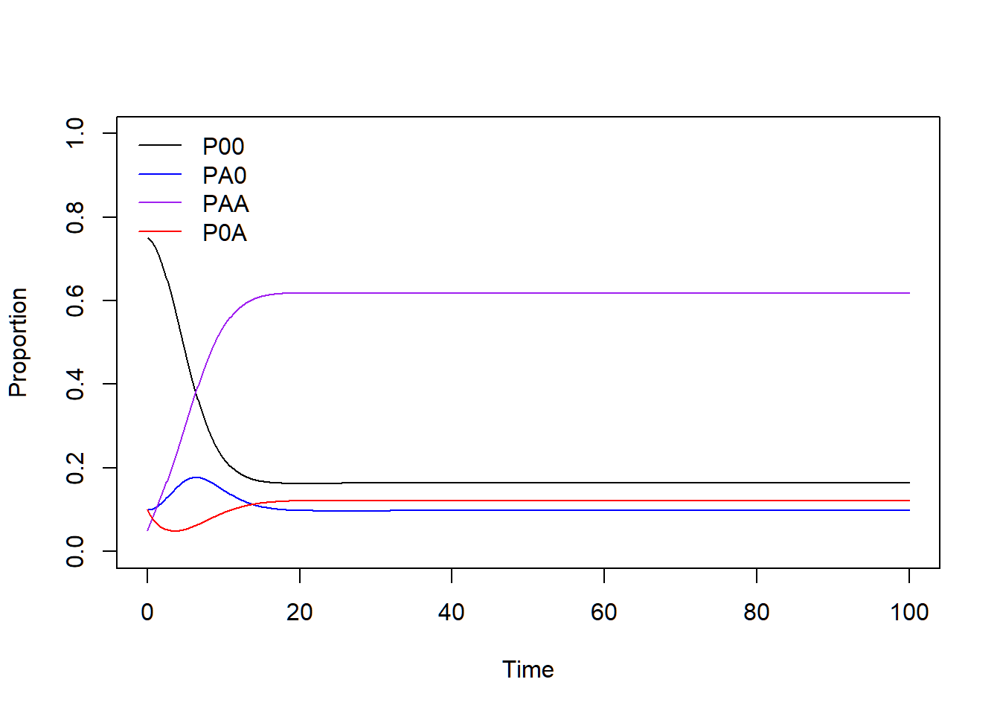

Week 5 - Metapopulations and patch occupancy models
Plants can condition nearby soil microbial communities, which will in turn influence the performance of subsequent colonizing plants. The soil beneath plant communities are therefore a mosaic with different cultivation histories. Po-Ju wants to understand how plant demographic rates (i.e., colonization and mortality rate) and microbial dynamics (i.e., the conditioning and decay rate of microbial communities) affect the percentage of different soil types in natural forests. As a starting point, Po-Ju builds a one-species patch occupancy model to track the dynamics of different types of plant-soil combination.
In this model, he characterizes sites by their plant-soil microbe state, using the notation \(P_{ij}\) to indicate sites that are now occupied by plant species \(i\) but have soil microbes state \(j\). Here, as a single species model, \(i\) can be 0 or \(A\), representing uncolonized sites or sites colonized by plant \(A\), respectively. Similarly, \(j\) can be 0 or \(A\), indicating sites without recent plant conditioning history or sites conditioned by plant \(A\), respectively. In summary:
- \(P_{00}\) represents uncolonized and unconditioned sites
- \(P_{A0}\) represents cites colonized by plant \(A\) but the soil is yet to be conditioned
- \(P_{AA}\) represents plant \(A\) colonizing a site with plant-\(A\)-specific microbial community
- \(P_{0A}\) represents sites that are currently unoccupied but have soil microbes that were associated with plant \(A\)
At the landscape scale, \(P_{ij}\) represents the proportion of sites belonging to a particular plant-soil microbe state, and its dynamics, \(\frac {dP_{ij}}{dt}\), summarizes the processes of plant colonization and death. The transitions between different plant-soil microbe states can be described by the following figure.

Here, \(P_{00}\) can be colonized by plant \(A\) when propagules arrive (per capita rate \(r_{A}\)), transitioning the state from \(P_{00}\) to \(P_{A0}\). Plants may die, with rate \(m_{A}\), before conditioning the soil (i.e., transition from \(P_{A0}\) back to \(P_{00}\)), or may successfully condition the soil with rate \(c_{A}\) (i.e., transition from \(P_{A0}\) to \(P_{AA}\)). After plants within the state \(P_{AA}\) die, a site with microbial legacy is left behind, denoted as \(P_{0A}\). These empty sites can be recolonized (i.e., transition from \(P_{0A}\) back to \(P_{AA}\)) with rates affected by the microbial legacy effect, \(\alpha\). Finally, the microbial community within the soil may decay to unconditioned state with rate \(d_{A}\), transitioning the state from \(P_{0A}\) to \(P_{00}\).
In this lab, we are going to model the dynamics of this plant-soil system. We will start by converting the flow diagram into a set of differential equations and then solve them numerically using the package deSolve.
library(deSolve)
library(ggplot2)
library(tidyr)
### Model specification
PSF = function(Time, State, Pars){
with(as.list(c(State, Pars)),{
dP00_dt = - rA * (PA0 + PAA) * P00 + mA * PA0 + dA * P0A
dPA0_dt = rA * (PA0 + PAA) * P00 - cA * PA0 - mA * PA0
dPAA_dt = cA * PA0 + alpha * rA * (PA0 + PAA) * P0A - mA * PAA
dP0A_dt = mA * PAA - alpha * rA * (PA0 + PAA) * P0A - dA * P0A
return(list(c(dP00_dt, dPA0_dt, dPAA_dt, dP0A_dt)))
})
}
#### Set simulation parameters with the 'quick simulation parameters'
pars = c(rA = 0.5,
mA = 0.1,
cA = 0.5,
dA = 0.4,
alpha = 0.3)
#### Set initial condition and time steps
times = seq(0, 100, by = 0.1)
ini = c(P00 = 0.75, PA0 = 0.1, PAA = 0.05, P0A = 0.1)
#### Run the simulation
pop_size = ode(func = PSF, y = ini, parms = pars, times = times)
#### Check if simulations reached stable point
tail(pop_size)## time P00 PA0 PAA P0A
## [996,] 99.5 0.1634825 0.09738004 0.6174124 0.1217251
## [997,] 99.6 0.1634825 0.09738004 0.6174124 0.1217251
## [998,] 99.7 0.1634825 0.09738004 0.6174124 0.1217251
## [999,] 99.8 0.1634825 0.09738004 0.6174124 0.1217251
## [1000,] 99.9 0.1634825 0.09738004 0.6174124 0.1217251
## [1001,] 100.0 0.1634825 0.09738004 0.6174124 0.1217251## [996,] [997,] [998,] [999,] [1000,] [1001,]
## 1 1 1 1 1 1After checking the outcomes of our numerical simulation, we can visualize the system dynamics through time, using any method you prefer. The following are some examples:
Visualization of the system dynamics through time using function matplot.

Visualization of the system dynamics through time using base R, with axis labels and given line colors.
#### Plot (base R)
plot(x = range(times), y = c(0,1), type = "n", xlab = "Time", ylab = "Proportion")
lines(P00 ~ time, data = pop_size, col = "black")
lines(PA0 ~ time, data = pop_size, col = "blue")
lines(PAA ~ time, data = pop_size, col = "purple")
lines(P0A ~ time, data = pop_size, col = "red")
legend("topleft",
legend = c("P00", "PA0", "PAA", "P0A"),
col = c("black", "blue", "purple", "red"), lty = 1, bty = "n")Data organization using package tidyverse and visualization of the system dynamics through time using package ggplot2.
### ggplot course website version
pop_size %>%
as.data.frame() %>%
gather(key = "Patch", value = "Proportion", -time) %>%
ggplot(aes(x = time, y = Proportion, color = Patch)) +
geom_line(linewidth = 1.5)
Now we see that the system would eventually be stable, we can jump through the time series and directly take the final equilibrium point (assuming the selected simulation length works for different parameter values). Our next step is to modify the target parameter related to our research question and study their resulting outcome. For example, we want to see how the final fate of this system would change under different decay rates of the conditioned microbial effect (i.e., d_{A}, the transitioning from P_{0A} to uncolonized and unconditioned soil P_{00}). We can efficiently vary the target parameter using a for-loop to run the simulation under different decay rates.
Using for loop to run the simulation under different decay rates (\(d_{A}\)).
### For-loop over different parameter values
### Parameter range and saving space setup
dA_seq <- seq(from = 0.1, to = 0.8, by = 0.1)
Data <- as.data.frame(matrix(0, nrow = length(dA_seq), ncol = 6))
names(Data) <- c("dA", "time", "P00", "PA0", "PAA", "P0A")
Data[, 1] <- dA_seq
### Use for loop to change the parameter every time
for(i in 1:length(dA_seq)){
# Set simulation parameters
pars_new <- c(rA = 0.5, mA = 0.1, cA = 0.5, dA = dA_seq[i], alpha = 0.3)
# Simulate
pop_size_new <- ode(func = PSF, y = ini, parms = pars_new, times = times)
# Save results
Data[i, c(2:6)] <- pop_size_new[length(times), ]
}Visualization of the stable state under different decay rates (\(d_{A}\)) using base R, with axis labels and given line colors. Does the pattern match your intuition?
### Plot resulting equilibrium against different dA
plot(x = range(dA_seq), y = c(0,1), type = "n",
xlab = "Decay rate of conditioned soil",
ylab = "Equilibrium proportion")
lines(P00 ~ dA, data = Data, col = "black")
lines(PA0 ~ dA, data = Data, col = "blue")
lines(PAA ~ dA, data = Data, col = "purple")
lines(P0A ~ dA, data = Data, col = "red")
legend("topleft",
legend = c("P00", "PA0", "PAA", "P0A"),
col = c("black", "blue", "purple", "red"), lty = 1, bty = "n")
Visualization of the stable state under different decay rates (\(d_{A}\)) using package ggplot2.
### ggplot course website version
Data %>%
as.data.frame() %>%
gather(key = "Patch", value = "Proportion",-dA, -time) %>%
ggplot(aes(x = dA, y = Proportion, color = Patch)) +
geom_line(linewidth = 1.5)